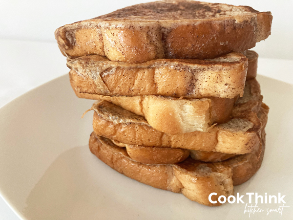

this anabolic french toast are a goto for body builder because of their low calorie and high in protein content
If you're reading this recipe, you are likely interested in gaining muscle and strength and in order to do that you consume high quality nutrients, especially protein. Eating Anabolic French Toast is one of the quickest and easiest ways to do that
here is the shopping list of item you need to make this recipe
hope you will enjoy this recipe see you soon !